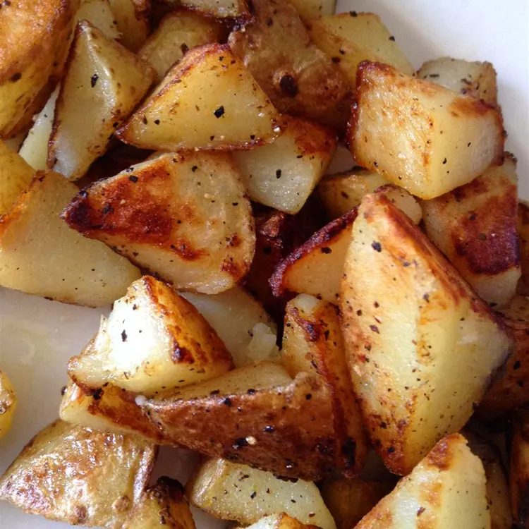

Fries

Description
These home fries turn out crispy every time. They're great for breakfast or as a side dish. If you prefer crispy hash browns, use shredded potatoes (instead of cubed) and follow the recipe directions
Ingredients
- Potatoes
- Butter
- Seasonings
Steps
- Rinse and drain the cubed Potatoes.
- Season and cook the potatoes, covered, on the stove.
- Remove the lid and continue cooking until crisp